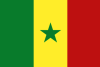

|
Länderinformationen Senegal
1. Das Wichtigste auf einen Blick2. Sehens- und Hörenswertes
3. Politik & Gesellschaft
4. Schmeckenswertes
5. Medien
6. Reisetipps
1. Wissenswertes
|  | Hier
haben wir die wichtigsten Zahlen und Fakten zum Land Senegal
und zu Wolof, der in Senegal gesprochenen Sprache, zusammengetragen. |
 Die
Sprache Wolof
Die
Sprache Wolof
Die Sprache Wolof wird vom Volk der Wolof, die im Senegal ca. 40% der Bevölkerung stellen, als Muttersprache gesprochen. Zum Stamme der Wolof gehören außerdem Bevölkerungsgruppen in Gambia und in Mauretanien. Die Sprache Wolof gehört zur großen Gruppe der Niger-Kongo-Sprachen, zu denen beispielsweise auch Swahili, Zulu oder Lingala gezählt werden. Die beiden letzteren gehören zur Untergruppe der Bantu-Sprachen. Die Niger-Kongo-Sprachen bilden mit über 1400 Sprachen, die sich in viele tausend Dialekte gliedern, die größte Sprachfamilie der Welt. Etwa 45% aller Afrikaner sprechen eine Niger-Kongo-Sprache, die weltweit rund ein Viertel aller Sprachen ausmachen. Einige Sprachen hiervon sind sogenannte Verkehrssprachen, d.h. sie werden nicht nur von den Muttersprachlern selbst, sondern auch von anderen Menschen als Zweitsprache gesprochen.
Wolof ist Handels- und Verkehrssprache im Senegal und wird auch in Gambia und Mauretanien teilweise gesprochen. Im Senegal sprechen ca. 80% der Bevölkerung Wolof. In Gambia sind es lediglich 15% der Bevölkerung, aber in der Hauptstadt von Gambia, in Banjul, beherrscht jeder zweite Einwohner Wolof. In Mauretanien wird Wolof lediglich in den südlichen Regionen gesprochen. Landesweit sprechen es rund 7% der Mauretanier.
 Die Schrift
Die Schrift
Wolof wird heute mit lateinischen Buchstaben geschrieben, was auf die Kolonialherrschaft Frankreichs zurückfällt. Zur Zeit der Islamisierung im 11. Jahrhundert wurde Wolof zunächst aber auf Arabisch geschrieben. Viele Gedichte und religiöse Schriften sind daher auf Arabisch überliefert.
Offizielle Amtssprache für den Senegal ist Französisch, dennoch wir sehr oft Wolof als Verkehrssprache verwendet.
 Bevölkerung
Bevölkerung
Im Senegal leben etwa 12,5 Millionen Menschen. Die Bevölkerungszahl des Senegal ist in den letzten 20 Jahren um etwa das Doppelte gestiegen und das momentane Bevölkerungswachstum liegt bei rund 2,7% pro Jahr. Die meisten Menschen leben an der Westküste, vor allem im Einzugsgebiet der Hauptstadt Dakar. Die Mehrheit der Bevölkerung, ungefähr 94%, sind sunnitische Muslime. Es gibt jedoch auch einen Anteil von 5% an Christen im Senegal.
Das Durchschnittsalter der senegalesischen Bevölkerung liegt bei rund 19 Jahren. Der Senegal weist somit eine wesentlich jüngere Gesellschaft auf als vergleichbare westliche Industriestaaten (in Deutschland liegt das Durchschnittsalter beispielsweise bei knapp 43 Jahren). Die Geburtenrate lag 2007 im Senegal bei knapp 38 Geburten pro 1.000 Einwohner (entspricht durchschnittlich fünf Kindern pro Frau im Jahr 2007) und ist damit fast viermal so hoch wie in Deutschland.
Die durchschnittliche Lebenserwartung im Senegal liegt bei rund 55 Jahren bei den Männern und rund 58 Jahren bei den Frauen.
 Fläche
Fläche
Das Staatsgebiet umfasst rund 196.000 km² und ist damit flächenmäßig fast dreimal so groß wie das deutsche Bundesland Bayern. Das Staatsgebiet des Senegal umschließt fast vollständig das Land Gambia – bis auf einen kleinen Küstenstreifen von ca. 60 km.
 Währung
Währung
Im Senegal wird mit der Währung CFA-Franc BCEAO bezahlt. Die Abkürzung CFA steht für Franc de la Communauté Financière d'Afrique. Mit dieser Währung wird in allen Ländern bezahlt, die der UEMOA angehören. Die UEMOA ist die Westafrikanische Wirtschafts- und Währungsunion (frz.: Union économique et Monétaire Ouest Africaine). Die zugehörige Notenbank ist unabhängig, die Währung aber an den Euro gekoppelt. Die Währungspolitik ist sehr stabilitätsorientiert und die Inflationsrate ist sehr gering. Zur UEMOA gehören die folgenden Staaten: Benin, Burkina Faso, Elfenbeinküste, Guinea Bissau, Mali, Niger, Senegal und Togo. Es gibt außer dem CFA-Franc BCEAO (Banque Centrale des États de l`Afrique de l`Ouest) auch noch die Währung CFA-Franc BEAC, die in Äquatorialguinea, Gabun, Kamerun, der Republik Kongo, dem Tschad und der Zentralafrikanischen Republik gilt. Gemeinsam bilden die westafrikanischen Länder mit dem CFA-Franc BCEAO und die zentralafrikanischen Länder mit dem CFA-Franc BEAC die CFA-Franc Zone.
Historisch stand die Bezeichnung CFA-Franc von 1945 bis 1958 für Colonies Françaises d'Afrique, dann zwischen 1958 und der Entkolonialisierung für Communautés Françaises d'Afrique.
 Ökonomische Situation
Ökonomische Situation
Der Senegal gehört zu den Entwicklungsländern. Jedoch ist er weiter entwickelt als seine Nachbarstaaten und so liegen die Preise im Senegal etwas höher als in seinen Nachbarstaaten. Wie in den meisten Entwicklungsländern, ist die überwiegende Mehrheit der Menschen, rund drei Viertel der Bevölkerung, im Agrarsektor tätig. Allerdings macht die Landwirtschaft nur ca. 20 Prozent des Bruttoinlandsproduktes aus und so müssen über 40 Prozent der Grundnahrungsmittel aus dem Ausland importiert werden. Die KfW Entwicklungsbank hat 460 Mio. Euro in eine bessere Wasserversorgung im Senegal investiert, nachdem sich die Situation in den 90er Jahren im Senegal aufgrund der Bevölkerungsexplosion zugespitzt hatte. Damals wurden die ohnehin knappen Grundwasservorkommen – vor allem rund um die Hauptstadt Dakar – rücksichtslos ausgebeutet.
Mitte der 90er Jahre begann die Regierung auch das Land zu dezentralisieren und mehr Verantwortung auf die Gemeinden zu übertragen. Viele Schritte waren nötig, um dies umsetzen zu können. Auf kommunaler Ebene sind nun viele internationale Geber im Senegal tätig. Die deutsche Entwicklungszusammenarbeit ist seit 1994 vor allem in Kaolack und Fatick aktiv.
Hinderlich am wirtschaftlichen Wachstum bzw. an der Entwicklung des Landes waren in der Vergangenheit, wie sooft in Afrika, bewaffnete Konflikte. Diese forderten hohe menschliche und wirtschaftliche Verluste. In der jüngsten Vergangenheit kam es aber zu keinen größeren Zwischenfällen mehr und immer mehr Flüchtlinge kehren in ihre Heimatdörfer zurück. So ist bei den Menschen im Senegal heute eine ausgeprägte Konfliktmüdigkeit und große Sehnsucht nach einem dauerhaften Frieden spürbar.
 Zeitzone
Zeitzone
Senegal liegt in einer anderen Zeitzone als Deutschland, Österreich oder die Schweiz. Der Zeitunterschied beträgt dabei minus eine Stunde. Um Ihnen das anhand eines Beispiels zu erklären: Wenn es in München 12 Uhr mittags ist, zeigt die Uhr in Dakar erst 11 Uhr.
Es gibt im Senegal keine Sommerzeit, sodass während der deutschen Sommerzeit der Zeitunterschied 2 Stunden beträgt.
Im
nächsten Kapitel haben wir einige ausgesuchte Reiseempfehlungen
zusammen gestellt.